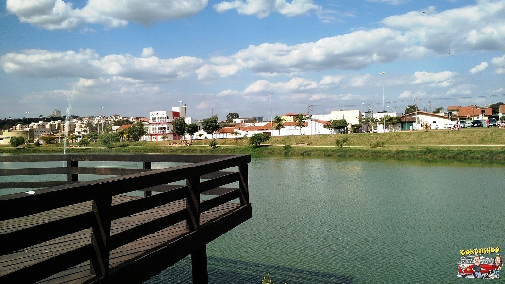
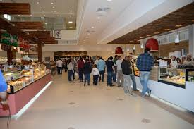

Parque em Sorocaba

Veja aqui!
Sorocaba possui muitos parques públicos: Chico Mendes, Biquinha, Botânico, Água Vermelha e Espanhóis
Veja aqui!
Happy hour em Sorocaba

Depois de um dia de trabalho um encontro com pessoas queridas. Opções de sobra na região.
Veja quais as melhores opções: Guia do Agenda Sorocaba